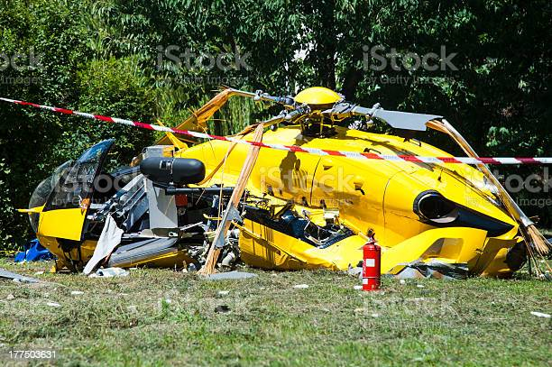

<!DOCTYPE html>
<html xmlns="http://www.w3.org/1999/xhtml"></html>
<html lang="en">
  <head>
    <meta charset="UTF-8" />
    <meta http-equiv="X-UA-Compatible" content="IE=edge" />
    <meta name="viewport" content="width=device-width, initial-scale=1.0" />
    <title>Se estrella el helicoptero</title>
    <link rel="stylesheet" href="bootstrap/css/bootstrap.min.css" />
    <style>
      body {
        font-family: Verdana, Geneva, Tahoma, sans-serif;
      }
      h2 {
        color: black;
        text-align: left;
        font-size: 16px;
        margin-left: 30px;
        margin-top: 30px;
        margin-bottom: 60px;
      }

      h1 {
        color: green;
        text-align: center;
        font-size: 37px;
        margin-top: 30px;
        margin-bottom: 60px;
      }
      p {
        color: black;
        text-align: justify;
        font-size: 25px;
        
      }
      a {
        background-color: darkgreen;
        color: white;
        text-align: center;
        text-decoration: none;
        margin: 6px;
        border-style: solid;
        padding: 10px;
        border-color: olive;
        font-size: 17px;
        margin-top: 20px;
        margin-bottom: 20px;
      }
      nav {
        text-align: center;
        font-size: 20px;
        margin-top: 60px;
        margin-bottom: 60px;
      }
      footer {
        background-color: darkgreen;
        margin: 6px;
        border-style: solid;
        padding: 1px;
        border-color: olive;
        color: white;
        text-align: center;
        font-size: 17px;
      }
    </style>
  </head>
  <body>
    <header>
      <h2>Sustos y tragedias en misiones</h2>
      <h1>El helicoptero se estrella</h1>
    </header>

    <div class="container p-2">
      <div class="row p-2">
        <div class="col-md-7 p-2">
          <p>
            Todos comenzamos a gritar, no podía respirar, me faltaba el aire,
            nos abrazamos y rezamos para que pase un milagro, pero no fue así,
            la nave se estrelló. Cuando me quise dar cuenta ya estaba en otro
            parte, era un salón con mucha iluminación y estaba al lado de mi
            familia y de Dios, en ese momento me di cuenta que no pudimos
            sobrevivir y que ya nos encontrábamos en lugar mejor.
          </p>
        </div>

        <div class="col-md-5 p-2">
          
        </div>
      </div>
    </div>

    <nav>
      <a href="index.html"> Volver al inicio</a>
    </nav>

    <footer>Autor: Ezequiel Daher</footer>
    <script src="bootstrap/js/bootstrap.bundle.min.js"></script>
  </body>
</html>
